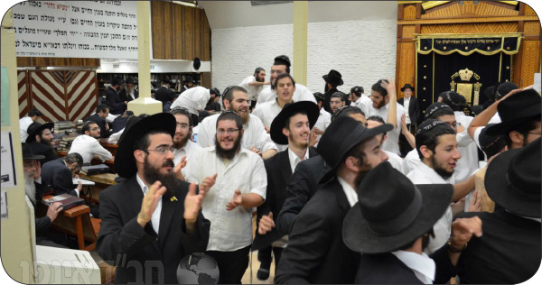

אחרי שנים של צפייה ולאחר חודשים של הכנה, תלמידי ה’קבוצה’ של שנת תשע”ד נוחתים בבי
אחרי שנים של צפייה ולאחר חודשים של הכנה, תלמידי ה’קבוצה’ של שנת תשע”ד נוחתים בבית רבינו שבבבל - 770 • הימים הראשונים ב’בית משיח’ מנקודת מבטו של אחד מתלמידי הקבוצה
אחרי שנים של צפייה ולאחר חודשים של הכנה, תלמידי ה’קבוצה’ של שנת תשע”ד נוחתים בבית רבינו שבבבל - 770 • הימים הראשונים ב’בית משיח’ מנקודת מבטו של אחד מתלמידי ה’קבוצה’

בהתוועדות מוצאי שבת קודש ח”י אלול ב770, סיפר המשפיע הרב ישראל גרינברג, סיפור מרתק. בבית כנסת מסוים בבורו-פארק, היו מתפללים מכל הסוגים, כולם מתקרבים לדרך החסידות. שונה היה ר’ יששכר, אומנם היה חביב ועדין אך היה מתנגד. ביום בהיר, נכנס לביהכנ”ס יהודי מירושלים שבא לבקש מהמתפללים עזרה בהוצאות החתונה של בתו. הוא ניגש לפינה שבא יושב ר’ יששכר, וביקשו באדיבות לתת את תרומתו. ר’ יששכר פישפש בכיסיו, ומיהר להתנצל בפניו על כך שכעת אין בכיסו מאומה. היהודי שלנו, החליט להתעקש. הוא החל מפציר בר’ יששכר שייתן לו לפחות משהו, אך הלה חזר על טענתו שכיסיו ריקים.
כשהירושלמי הכריז שהוא לא יזוז משם עד שיקבל אפילו פרוטה, מילמל ר’ יששכר לעצמו “כנראה זה מיועד עבורך..” הוא הושיט את ידו לכיסו ושלף דולר.. דולר שהתקבל מידו הק’ של כ”ק אדמו”ר שליט”א.
המתפללים שהתאספו בינתיים, עמדו המומים. מה עושה דולר של הליובאוויטשער רבי אצל יששכר המתנגד?.. האחרון, לא השאיר אותם בספק זמן רב. “הבוקר כשצעדתי לבית הכנסת, הבחנתי בדולר המונח בתוך שלולית מים. כששלפתי אותו משם, הבחנתי בכיתוב המעיד שהוא התקבל מהרבי מליובאוויטש. החלטתי שעל אף שאני לא מאמין (לעת עתה) בדברים כגון דא, אתן זאת למישהו שזה יעזור לו… כעת הבנתי שאתה הוא הראוי..” סיים את דבריו כשהוא מביט על הירושלמי. רק כעת הוא הבחין שהעומד מולו חיוור וידיו רועדות. כעת, הגיע תורו לספר..
“אני גר בירושלים – החל בסיפורו – וב”ה נולדו לי 17 ילדים כ”י. כשהבת הראשונה עמדה בפני החתונה, נאלצתי לנדוד את רגלי לארה”ב לאסוף תרומות ל’הכנסת כלה’. כאן בניתי מסלול קבוע, כך שתוך ארבעה חודשים חזרתי לביתי והסכום בידי. עם הבן השני, זה היה אותו דבר. כשהגיע תור הבן השלישי, הגיע לאוזני שמועה על הרבי מברוקלין ש’מחלק דולרים’, ההצעה קסמה לי, החלטתי לנסות להתרים אותו על סכום קצת יותר גדול… אחרי המתנה ממושכת בתור, עמדתי מול פניו של הרבי. לשוני נאלמה ולא הספקתי להגיב עד שמצאתי את עצמי נדחף החוצה ודולר בודד בידי. כעסתי על עצמי שבזבזתי את זמני..
כעבור שלושה שבועות, שבתי לביתי שבירושלים. שחתי בפני אשתי על כך שלטענתי זמני בוזבז בהמתנה לקבלת דולר בודד מהרבי. אשתי מיהרה להפנות את ליבי לעובדה שבמקום 4 חודשים של איסוף תרומות, לקח הפעם רק 3 שבועות. החלטנו בפעם הבאה לבדוק ולעבור אצל הרבי..
מאז, כל פעם אני עובר דרך 770. הרבי מעניק לי דולר, וזמן ההתרמה מצטמצם. השנה, אני עומד לחתן את בתי. יצאתי לניו יורק, כשבליבי כאב עצום. הן זה כבר כמה שנים שפני הרבי לא נראים, כשעליתי על המונית בשדה התעופה, נפלטה מפי הכתובת “770 איסטערן פארקווי”. כשנכנסתי ל-770, הבחנתי בתכונה מיוחדת. במרכז נפתח שביל, וקהל החסידים החל שר בעוז “יחי אדוננו..” כשניסיתי לברר מה בדיוק הולך כאן, נעניתי שכעת הרבי שליט”א נכנס לתפילה. מילים כאלו, היו למעלה מכפי יכולת השגתי… אך התאפקתי והתפללתי מעריב עם הקהל.
בסיום התפילה, לאחר שהשביל נפתח שוב, ושירת החסידים נהפכה לריקוד סוער, פרצה מליבי הבקשה והתביעה: רבי, אני לא זוכה לראות אותך בעיניים גשמיות. אבל אני לא מעוניין להאריך את מסלול ההתרמה שוב לארבעה חודשים… אם באמת אתה חי, אני רוצה לקבל דולר לברכה!
כעת – מסיים הירושלמי את סיפורו – אתה הראשון שאני ניגש אליו היום, ואתה מעניק לי דולר מהרבי…”
• • •
עומד יהודי, ירושלמי וכשהוא לא רואה – קשה לו להאמין. אך, מול עוצמות האמונה, כנגד השירה האדירה של בנים נאמנים למעלה מעשרים שנה – ‘יחי אדוננו מורנו ורבינו מלך המשיח לעולם ועד!..’ גם ליבו נמס והוא זועק: רבי, אני יודע שאתה חי, אך רצוני לראותך בעיניי בשר!!
‘ואנן חסידים’ אנו התמימים שזכינו השבוע בזכות העצומה להיות סמוכים על שולחן אבינו לשנה תמימה, לכולנו בוער הרצון לא רק לדעת, להאמין ולבטוח ב”מציאות האמיתית ע”פ תורה” שכ”ק אדמו”ר מלך המשיח שליט”א חי וקיים “ללא שום שינוי”, כולנו משתוקקים וצמאים ליום שנזכה לראות זאת בעיניים גשמיות.
כעת, עם פתיחתו של היומן מ’בית חיינו’, פורצת מליבי הזעקה: עד מתי?!… ברור לי שגם הקבוצע’ס הקודמות זכו בזכות הנפלאה להיות שנה תמימה עם מלך המשיח, אני מבין שכל היומנים שתיארו עד עכשיו את שנת ה’קבוצה’ היו עדות חיה לאמונה הלוהטת שכלום לא השתנה ו’הנה הנה משיח בא’, אני שמח על האפשרות שניתנה לי להיות הצינור דרכו אחיי התמימים באה”ק ובעולם יחיו עם הנעשה והנשמע בבית רבינו שבבבל – בית משיח.
אבל, “כל זה איננו שווה לי..” כל עוד לא רואים מלך ביופיו! כל עוד והיומן מתאר את הצפייה במקום את הגילויים, את הזעקה במקום תיאור פני הקודש – הרי היומן לא ממלא את מטרתו האמיתי!! למצב נורא כזה, שעוד שנה חולפת והיומן מסתיים ב”את אשר קיוינוהו מצאנו, אך לא ראינו…” אני לא נותן שום נתינת מקום. ברור כשמש, שלא יתכן שעוד שנה תעבור ללא שנזכה לחזות בפני מלך חיים!!
מתוך ביטחון זה, פורצים אנו בריקוד סוער, בשמחה עצומה – שמחת הגאולה. בשירה הנצחית, ההכרזה שלא פוסקת לעולם, הביטחון המוחלט בדברי נביא הדור וקבלת מלכותו של כ”ק אדמו”ר שליט”א – כמלך המשיח:
יחי אדוננו מורנו ורבינו מלך המשיח לעולם ועד! כתיבה וחתימה טובה, לשנה טובה ומתוקה. שנת גאולה. מענדי, קבוצה בבית משיח – 770.
אור ליום רביעי ט”ו אלול
האוטובוס עוצר בצומת, מרחוק אני מבחין בבנין אדום ושלושה משולשים. מגיע לתחנה האחרונה שלנו בארץ הקודש – בית אגו”ח 770 בכפר חב”ד. מכל רחבי הארץ מתקבצים התמימים דקבוצה ע”ד, מכאן נצא בסיומה של התוועדות חסידית סוחפת אל תוך הלילה, אל פסגת החלומות של החיים בעולם הזה, לבית רבינו שבבבל – 770 האמיתי ב”עיר הבירה של נשיא דורנו” בניו-יורק.
במשך כמה שעות יושב המשפיע ר’ עופר מידובניק שיחי’ ומתוועד עם התמימים על הזכות הנפלאה שנפלה בחלקם, לנסוע לשנה תמימה לרבי מלך המשיח שליט”א. הוא מעורר על ההכנה הדרושה והרצינות המתאימה בה עלינו לגשת לשנה הנפלאה הזו וכיצד לנצל במלואה את המתנה הגדולה הזו שקיבלנו מהרבי שליט”א.
לפנות הבוקר, התמימים עושים את דרכם למקווה ואחרי טבילה זריזה עולים לאוטובוס לכיוון נמל התעופה. ההתרגשות מתחילה לנסוק לגבהים, אל תוך דממת הלילה פורצת לפתע שירת “טייערע ברידער” אדירה הבוקעת מחלונות האוטובוס. מגיעים לשדה התעופה, אוטובוס פנימי מוביל אותנו מהטרמינל למטוס. ליד המטוס פורצים התמימים בריקוד שמחה אדיר, כמו בתמונות של פעם..
יום רביעי ט”ו אלול – יום התייסדות ישיבת ‘תומכי תמימים’ – “לא היו ימים טובים לישראל כחמישה עשר באלול”
המטוס ממריא, תוכלו לתאר לעצמכם כיצד נראית טיסה כזו, עשרות תמימים שנוסעים לרבי לשנת ה’קבוצה’, אפשר לומר שזה היה ממש פארבריינגען אחד גדול מרגע ההמראה עד לרגע הנחיתה. שעות הטיסה חולפות, המטוס מרחף כבר מעל שמי ניו-יורק, עוד רגע קט וגלגלי המטוס נושקים לרצפת האספלט ומתגלגלים עליו במהירות. המטוס כולו רועד ולא מעוצמת הנחיתה אלא מעוצמת השירה והריקודים של התמימים, “וועלן מיר פארן צום רעבן, מיר וועלן זיך ווייטער זעהן…” הלב הומה והרגשות גואים.
שעה קלה חולפת ואנו יוצאים משדה התעופה. בחוץ אנו פוגשים את אחינו התמימים המסורים מקבוצה ע”ג, שהגיעו לקבל את פנינו. למרות שזו לא הפעם הראשונה שאנו פורצים בריקוד סוער ביממה האחרונה, הרי עם כל רגע שעובר ההתרגשות הולכת וגוברת והשמחה מרקיעה שחקים.
לאף אחד אין זמן להתעכב, הלב מלא געגועים, כולם רוצים להגיע כבר הביתה. עולים לאוטובוס שיוצא בנסיעה מהירה אל היעד הסופי והנכסף. הנסיעה כולה מלווה בשירה שלא פוסקת. כשא’ התמימים מכריז: תמימים! נוסעים לרבי מלך המשיח שליט”א!! זהו כמו האות ואנחנו קמים ופורצים בריקוד מחודש. רעד-קל חולף כשאנו נכנסים לשכונת המלך, עוד רמזור אחד והנה, אנחנו כאן!!! עומדים מול הבית, בית המקדש, המקום שממנו יוצאת אורה לכל העולם. הלב ממאן להאמין, הגענו!!
פורצים מהאוטובוס בקולע חסידי, מעגל נוסף נפתח ברחבה שמול בית חיינו. נכנסים במהירות פנימה, ריקוד סוער במרכז 770 ומתיישבים מיד ללימוד מאמרי כ”ק אדמו”ר מלך המשיח שליט”א בסדר חסידות ערב. קולות הלימוד הראשונים בבית משיח, נשמעים אחרת לגמרי ממה שהכרנו עד עתה, הן זהו הסדר הראשון ב’קבוצה ע”ד’.
יום התייסדות ישיבת ‘תומכי תמימים’, אצלנו השמחה כפולה ומכופלת. שעת תפילת מעריב הולכת וקרבה ובשעה 9:25 אנו נעמדים מוכנים לקבלת פני משיח בשירה אדירה של “יחי אדוננו..” התפילה הראשונה עם הרבי שליט”א, מליבנו פורצת הזעקה: רבי, רוצים כבר לראות אותך! לא מוכנים לחכות יותר, בוא ותתגלה כבר, די!
תפילת מעריב מסתיימת בהכרזה הנצחית, שבוקעת מפיות כולם ללא הפסק כבר למעלה מעשרים שנה: יחי אדוננו מורנו ורבינו מלך המשיח לעולם ועד! ההכרזה נהפכת במהירות לשירה אדירה ולריקוד סוער…
הריקוד מתפשט, תוך דקות ספורות ו”770 גייט חאדאראם” כדברי כ”ק אדמו”ר שליט”א על ט”ו אלול. אל הריקודים מצטרף האורגניסט הת’ חיים נחמן בנסמיאן, בניצוחו של הרב יקותיאל מנחם ראפ שיחי’, שעומד ומחלק “לחיים” לקהל הרוקדים. בהמשך מגיע הנגן המפורסם ר’ יוסי הכהן כהן, שמגביר את קצב הריקודים ע”ד ‘שמחת בית השואבה’…
במרכז רחבת הריקודים נמצאים כמובן תלמידי ה’קבוצה’ שלא מתעייפים לרגע מלרקוד ולשמוח בשמחה העצומה על הזכות לבא להסתופף בבית משיח. רגע מרגש במיוחד היה בשירה האדירה: “קבוצה ע”ד – עם הרבי מלך המשיח שליט”א” כן, ה’קבוצה’ שלנו לא תמשיך עוד בגלות, אלא תזכה תיכף ומייד להתגלות הרבי שליט”א ותעבור להר הבית בירושלים.
אחרי שעות ארוכות של ריקודים, מתיישבים להתוועדות אל תוך הלילה עם הרה”ח אברמק’ה קוזלינר.
יום חמישי ט”ז אלול
בעת תחילת סדר חסידות בוקר, אפשר להתענג על המראה המלבב, כשמאות התמימים החדשים לצד הוותיקים יושבים ושוקדים על לימוד תורת החסידות. בסדר נגלה קולות לימוד מהדהדים בחלל בית רבינו שבבבל. “ליל שישי” הוא לילה שנתקדש מדורי דורות להתוועדויות חסידיות. הלילה מתקיימת ההתוועדות הראשונה של תלמידי ‘קבוצה ע”ד’ שמתוועדים יחד בפינת 770 אל תוך הלילה.
יום שישי י”ז אלול
בשעה 8:00 מתחיל סדר חסידות בוקר של יום שישי, “הסדר של הרבי”. שוב אפשר להתענג על המחזה הנפלא של תמימים היושבים ולומדים. בימים אלו של חודש אלול, תופסים מקום של כבוד מאמריהם של רבותינו נשיאנו לחודש זה וראש לכל: מאמרי “אני לדודי”, זאת לצד המאמרים של ראש השנה, התמימים יושבים והוגים בהם בשקיקה.
את הזמן שבין סדר חסידות לתפילת שחרית, מנצלים התמימים לטלפונים לארץ הקודש, למשפחה, לחברים מהישיבה או לחיילים מה’קעמפ’ – למסור להם דרישת שלום חמה מ-770, להאיר גם להם את האור הגדול ולהעביר להם את החיים והחיות סביב הרבי מלך המשיח שליט”א, שיחותיו והוראותיו.
מייד לאחר תפילת שחרית יוצאים התמימים ל’מבצעים’ ברחבי ניו-יורק, כשהיום מצטרפים לקבוצות היוצאות תלמידי ה’קבוצה’ החדשה, המשתלבים בפעילות העניפה, כשכולם יחד זוכרים את השליחות היחידה והעיקרית: להכין את העולם לקבלת פני משיח צדקנו, בקיום מצוות ומעשים טובים מתוך קבלת מלכותו של הרבי שליט”א.
לקראת כניסת השבת חוזרים התמימים לשכונת המלך ומתכוננים לכניסת השבת המיוחדת – שבת ח”י אלול יחד עם הרבי מלך המשיח שליט”א. כבר עכשיו נתלה בחזית בימת ההתוועדויות השלט המודיע על “התוועדות חסידים המרכזית לרגל ח”י אלול – יום הולדת שני המאורות הגדולים הבעש”ט ואדמו”ר הזקן” שתתקיים בצאת השבת.
ליל התקדש החג, גוט שבת! גוט יום-טוב!
שעה ארוכה לפני כניסת השבת והחג 770 מתמלא בתמימים כמו גם אנ”ש תושבי השכונה היושבים והוגים בשיחות הנפלאות של פרשת תבוא וח”י אלול. כמידי שבת, השולחנות מלאים בכל טוב רוחני של קבצים ועלונים חסידיים, ביניהם בולט הקובץ השבועי של “ועד חיילי בית דוד – 770” שלרגל ח”י אלול מביא סיפור מיוחד על “שליחו המסתורי של הבעל-שם-טוב”.
שעת תפילת מעריב מגיעה, קהל האלפים מקדם את פני מלך המשיח בשירה אדירה. שירת ‘לכה דודי..’ וכמובן ב’לא תבושי’ מחליפים לניגון שמתנגן ללא הפסק למעלה מעשרים שנה, אלו הם הרגעים הגדולים של השבת כשקהל החסידים עומד אל מול פני המלך ובמשך דקות ארוכות מנגן: “יחי אדוננו מורנו ורבינו מלך המשיח לעולם ועד” רגעים אלו לא ניתנים לתיאור, השמחה, האמונה, הציפייה והדרישה לראות כבר את ההתגלות המלאה והמושלמת ברגע זה ממש!
אחרי התפילה מתפזרים אנ”ש והתמימים לסעודות – התוועדויות השבת, בבתי ה’שכונה’. קבוצה גדולה בוחרת לסעוד בחדר האוכל של הישיבה, שם הם מתוועדים ומנגנים כשכל חדר האוכל נסחף אחריהם.
שבת קודש – יום-טוב של ח”י אלול שחל להיות בשבת
השיעור הקבוע ב’דבר מלכות’ השבועי מקבל השבוע ‘פנים חדשות’ עם השתתפותם של מאות התמימים מ’קבוצה ע”ד’. הקטע המרגש ביותר הוא ללא ספק השורות בהם מבהיר לנו הרבי שישנה חשיבות עצומה לכל מחשבה, דיבור או מעשה שלנו היות שהם חלק מה’ביכורים’ אותם מגישים לפני ה’ אלקיך ו“הכהן אשר יהיה בימים ההם (ובדורנו כ”ק מו”ח אדמו”ר – דברי כ”ק אד”ש בבלתי מוגה) בוחן כל תנועה שלו”. כשנבין שבכל רגע נתון אנו עומדים מול הרבי – הכל ייראה אחרת לגמרי!
בסיומה של תפילת שחרית מודיעים על “התוועדות קודש של כ”ק אדמו”ר מלך המשיח שליט”א” בשעה 1:30. בשעה היעודה מתייצבים אנ”ש והתמימים, עומדים הכן לפני המלך ומחכים בפשטות לשמוע את ההתוועדות של שבת פרשת כי תבוא ה’תשע”ג. כל עוד שאיננו שומעים, לומדים שוב את ההתוועדות האחרונה לעת עתה בשבת זו, בשנת ה’תנש”א.
התוועדויות החתנים מתקיימות בשיא השטורעם וממלאות את שולחנות בית חיינו, בעצם, החתנים הם רק התירוץ, הרי ח”י אלול היום וזה הזמן להתוועד. התמימים מ’קבוצה ע”ד פותחים גם הם שולחן על ה’בימה’ ויושבים ומתוועדים יחד באהבת רעים, עד לשעת תפילת מנחה.
אחרי מנחה מתקיים במרכז 770 ‘סדר ניגונים’ שבמהלכו מנגנים גם את “ניגון ארבע בבות” כמתאים ליום הולדתו של האדמו”ר הזקן. לאחר מכן א’ מאנ”ש חוזר על מאמר דא”ח לח”י אלול. בסיום הריקודים שלאחרי תפילת מעריב, פותחים את השבוע בראיית פני המלך. על המסך נראה מעמד עידוד שירת ‘יחי אדוננו’ במוצאי שבת קודש ח”י אלול ה’תשנ”ג, כשבאופן ספונטאני, הקהל כולו מצטרף לשירה האדירה והסוחפת.
במערב 770 מסדרים להתוועדות חסידים המרכזית לרגל ח”י באלול. מכל רחבי השכונה מתאספים אנ”ש והתמימים להתוועדות רבתית ביחד עם מלווה מלכה – סעודתא דדוד מלכא משיחא. בהתוועדות נושאים דברים רבני השכונה וחברי הבד”צ, משפיעים ושלוחים, המדברים על חשיבות היום שמוסיף חיות בכל העבודה של חודש אלול. אחרי מספר שעות, מתפצלים למספר התועדויות עם המשפיעים הרב נועם וואגנער, הרב ישראל גרינברג, הרב יהודה פרידמן ועוד. ההתוועדויות נמשכו לתוך הלילה..